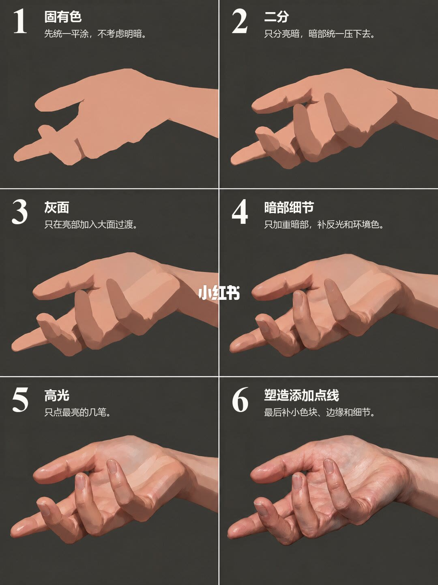
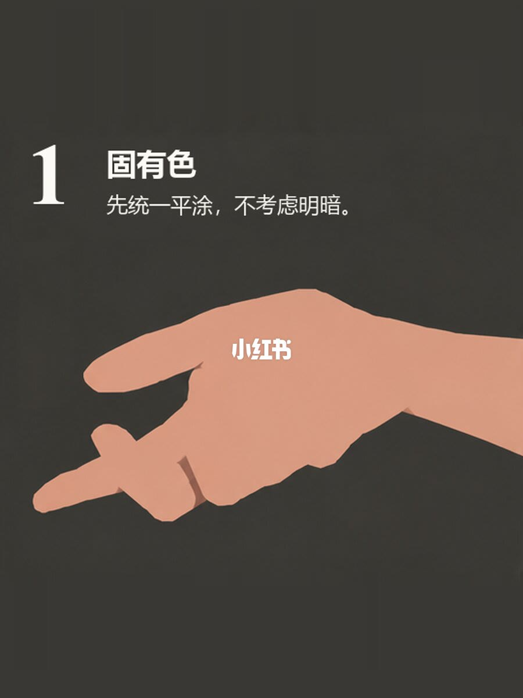
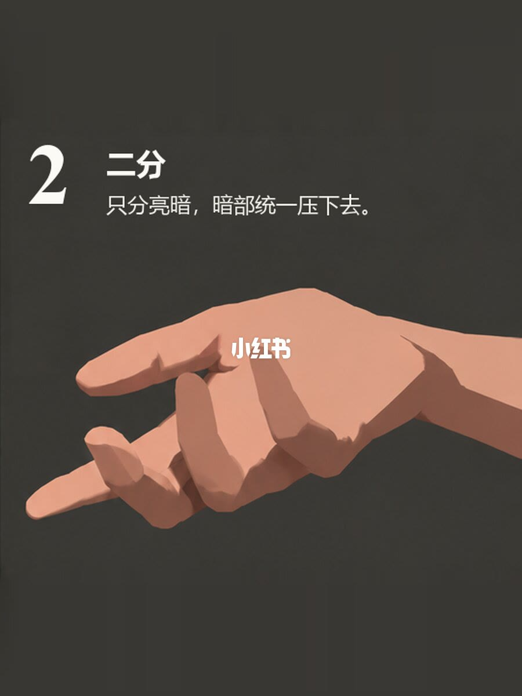
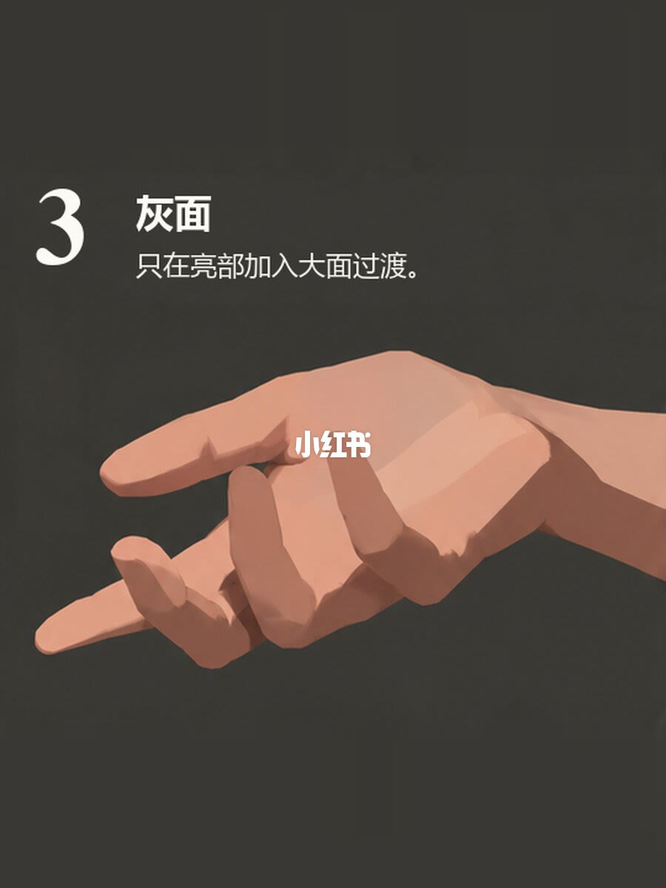
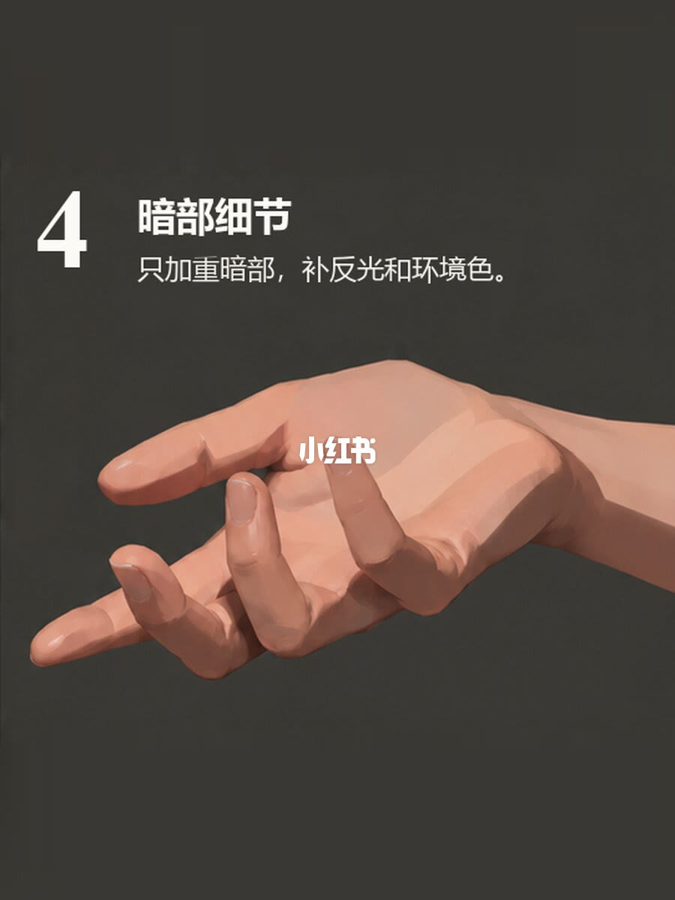
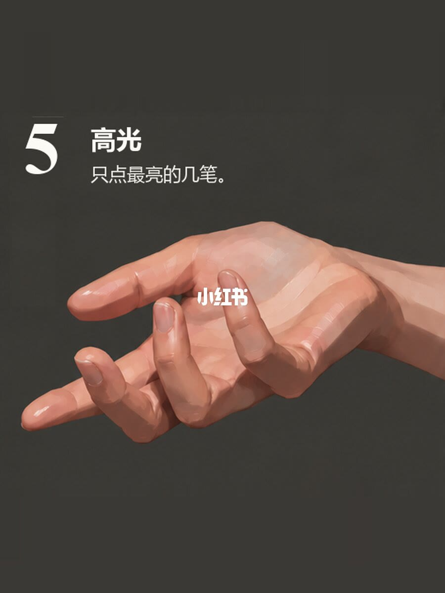
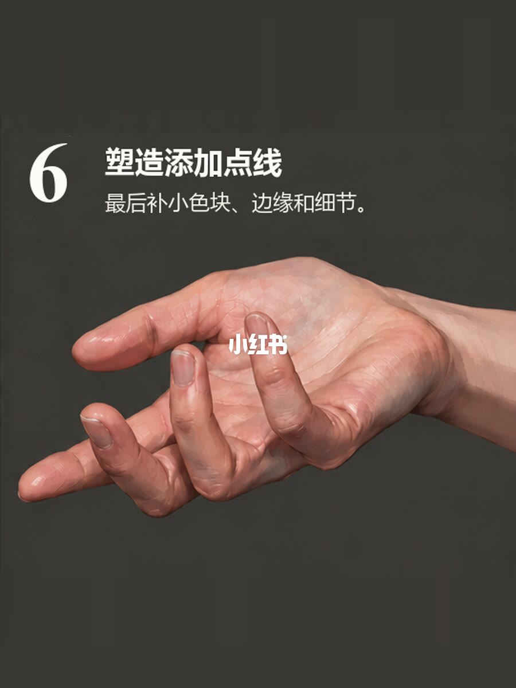

图文实录 · 小红书 · 杭州大云画室（翼帛）
六张图带你理清绘画步骤
标题要理清的是画一只手时，每一步准许改哪一层。答案是六步分层：先把整只手平涂成固有色，再只切亮暗，再只在亮部加大面过渡，然后才加重暗部并补反光和环境色，高光只点最亮的几笔，最后补小色块、边缘和细节。七页里第 1 页是六格总览，后六页各放大一步。笔记正文比画面标题更严：灰面时暗部保持第二步，处理暗部时不要顺手把亮部画细，高光不要大面积提亮。
1/7
六步并排
这一页是两列三行，同一只手走完六步。手是暖肤色，每格背后是深灰。格与格之间能看到浅色「小红书」水印。六格文字能对上后六页：1 固有色「先统一平涂，不考虑明暗。」2 二分「只分亮暗，暗部统一压下去。」3 灰面「只在亮部加入大面过渡。」4 暗部细节「只加重暗部，补反光和环境色。」5 高光「只点最亮的几笔。」6 塑造添加点线「最后补小色块、边缘和细节。」
手指是略弯的。手心朝上还是朝下、是左手还是右手，总览和单页对不齐，无法确认。光源在左上还是右上，也无法确认。这一页只负责对照有没有跳步，每一步的许可写在后六页和笔记正文里。

2/7
固有色，统一平涂
页首大字「1」，标题「固有色」。说明是「先统一平涂，不考虑明暗。」整只手是一块暖肤色剪影，内部没有亮面、灰面、暗面，也没有指甲和关节转折。背景是深灰。画面中央压着白色「小红书」水印。
笔记正文写：第一步先铺固有色。把整只手当成一个整体，先统一平涂，不急着找体积。这句话在正文里，画面标题只写到不考虑明暗。

3/7
二分，只立亮暗
标题「2 二分」。说明是「只分亮暗，暗部统一压下去。」亮部留着上一步的固有色，暗部收成一块更深的暖褐色，交界偏硬，灰面还没有铺开。体积是靠这两块的位置读出来的，不是靠渐变。
正文写：第二步只做亮暗二分。亮部保留固有色，暗部统一压下去，先把光影大关系立住。受光来自哪一侧，这一页无法确认。

4/7
灰面，只在亮部做大面
标题「3 灰面」。说明是「只在亮部加入大面过渡。」亮部和暗部之间出现大块中间调，笔触还在，手指和大面比上一步圆。交界不再只是一条硬切。
画面标题只写「只在亮部」。正文更严：第三步只完善亮部，在亮部和明暗交界附近加入灰面，让体积慢慢转起来，暗部继续保持第二步不变。图上能确认亮部有了大面过渡。暗部有没有被改动，这一页无法和上一页逐块核对，按正文的许可，这一步不该去动暗部。

5/7
暗部细节
标题「4 暗部细节」。说明是「只加重暗部，补反光和环境色。」从这一页起暗部才被打开，最深处比二分那一步更重。反光和环境色的具体色相，冷还是暖，画面上对不齐，无法确认。
正文写：第四步再处理暗部。只在最深的位置加暗中暗、反光和环境色，不要顺手把亮部一起画细。哪一小块是暗中暗、哪一小块是反光、哪一小块是环境色，画面没有标注，无法确认。

6/7
高光只点最亮的几笔
标题「5 高光」。说明是「只点最亮的几笔。」指尖、关节转折和指甲上出现小块很亮的光，亮的是这些点，不是整只手被提亮。高光是不是纯白，没有色值，无法确认。
正文写：第五步点高光。只在最亮的位置加几笔，不要大面积提亮。画面中央仍有「小红书」水印，不要把它读成高光。

7/7
塑造，添加点线
标题「6 塑造添加点线」。说明是「最后补小色块、边缘和细节。」这一步在已经分开的块面上补小色块和边缘：指甲、关节转折和皮肤褶皱比上一步清楚，轮廓有的地方更利。前面几步的大块亮暗还在，没有被涂成光滑的皮肤。
正文写：第六步最后收细节。补少量小色块、边缘线、指甲和关节转折，把手塑造完整。青筋或冷色是不是画在这一步，无法确认。光源方向和前面几页一样无法确认。

收尾
每一步只动被许可的那一层
结论：理清步骤，就是按 2/7 到 7/7 的顺序分层。固有色只平涂，二分只立亮暗，灰面只在亮部做大面过渡，暗部细节才进最深处，高光只点最亮的几笔，点线最后收边缘和细节。1/7 用来检查有没有跳步。
支撑页：画面上的六句许可分别落在 2/7、3/7、4/7、5/7、6/7、7/7。1/7 把六步放在同一只手上。笔记正文补上了画面标题没写全的限制：灰面时暗部保持第二步，处理暗部时不要顺手画细亮部，高光不要大面积提亮，收尾要补到指甲和关节转折。
边界：这是一只手的示范，没有笔刷、色号和光比。手心朝向、左右手和光源方向无法确认。反光和环境色没有在画面上标出对应色块，色相也无法确认。高光色值无法确认。青筋是否出现在 7/7，无法确认。